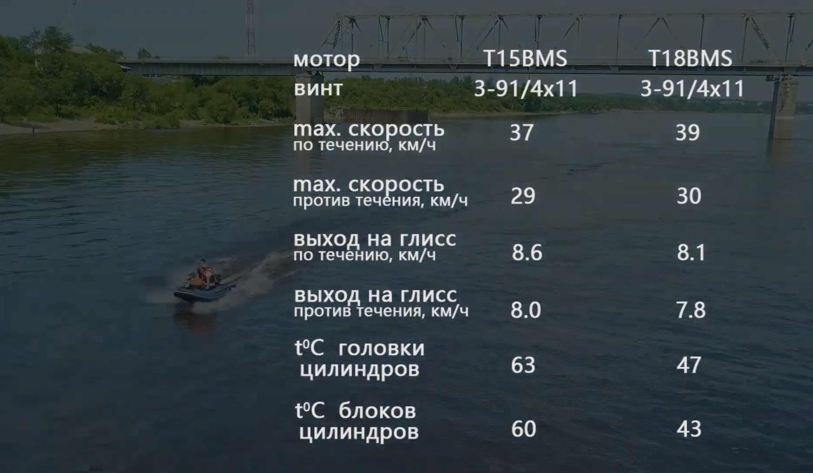
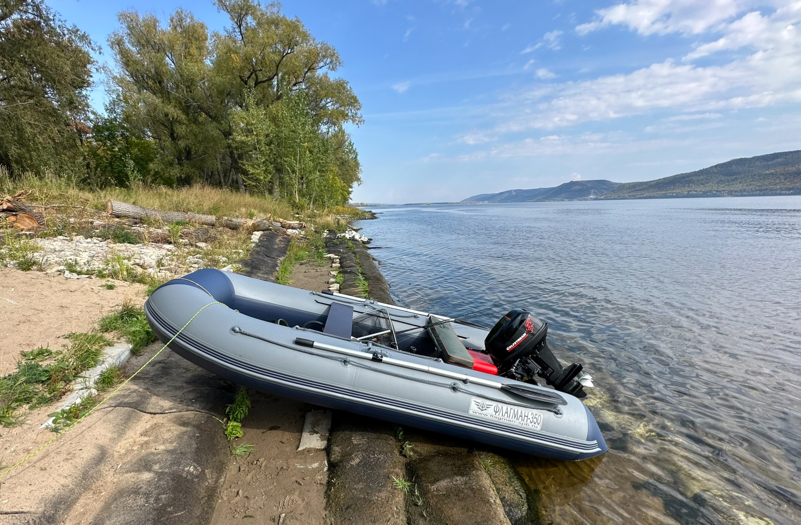

Programming, electronics, lifestyle
Летом прошлого года я купил себе новую лодку Флагаман 350. Это моя вторая лодка, до этого я плавал на веслах на лодке размером 270. Пересесть на больший размер заставило желание ходить с мотором: немного путешествовать по островам на Волге, больше рыбачить в труднодоступных местах, если это делать без мотора. Размер лодки выбирал как среднее между 330 и 390, чтобы носить можно было в одного и подходила для комфортной рыбалки вдвоём.
Уже понял, что нужно было брать 390, тк всё равно ездить в одного не интересно. Но речь не об этом.
При выборе подвесного мотора для ПВХ лодки столкнулся с непростым выбором. Хочу поделиться своим опытом и соображениями.
Так как разновидностей двигателей очень много, я вначале сужу круг рассматриваемых. То, от чего мы можем плясать – мощность и тип двигателя. Давайте определим критерии для этого:
Необходимость постановки на учёт в ГИМС
Я не планирую сдавать на лодочные права для управления ПВХ лодкой. Это слишком затратно по времени и пока неоправдано. В будущем, если буду переходить на более крупную лодку – получу права. Поэтому по документам мотор должен быть 9.9 л.с.
Большинство двигателей 9.9 на российский рынок идут 3х мощностей: 15, 18, 20 л.с.
Ограничения со стороны производителя лодки
Этот критерий важен с точки зрения безопасной эксплуатации.
Для лодки Флагаман 350 – 18 л.c.
Желаемая мощность
Тип двигателя: двухтактный (2Т) или четырехтактный (4Т)
Длина «ноги» (высота транца или дейдвуд)
381 мм (размер S)
Если подытожить получается:
Этот критерий субъективен. Я грубо поделил производителей на японские и китайские.
Из японских я рассматриваю Yamaha, Suzuki, Tohatsu, Mercury и Honda.
После беглого изучения цен, я сузил круг до более распространённых на российском рынке
Yamaha,SuzukiиTohatsu.
С китайцами всё интереснее. Брендов много, и они мало о чём говорят. Давайте рассмотрим основные фабрики производящие моторы в Китае.
За основу я взял информацию из блога Ивана Артемьева.
Suzhou Parsun Power Machine Co., Ltd.
HDX BMSGolfstream (бывший Parsun)ToyamaNexusMTR MarineРоссия, Мытищи (?)
HDX R-Series (отверточная сборка, завезён в Россию из двух запчастей (голова, нога))Hangzhou Power Machinery Co., Ltd.
HideaSeanovoMarlinMikatsuZhejiang Pioneer Machinery & Electron Co., Ltd.
HDX TitanumPowertecAqua JetTitanMagnusSea Pro (до 8 сил и T9.9S)Suzhou Allpass Machinery Co., Ltd. (бывший Tiger)
YamabisiTrollJet MarineSailSailorПарусAlfaSea Pro (9.8, OTH9.9) (новое Tarpon)Chongqing Zongshen-Selva Marine Co., Ltd.
Zongshen / SelvaBaltmotors (отверточная сборка в Калининграде)Taizhou Gongda Motors Parts Co., Ltd.
HangkaiWeihai Black Sea Marine Co., Ltd. (мутная компания, не понимаю как найти завод и посмотреть, где они и чо делают, на гугл-картах не ищется)
Gladiator (реальная фабрика неизвестна, Иван Артемьев предполагает, что двигатели собираются на Hangzhou Power Machinery Co., Ltd.)Я вывел 3 критерия к производителю:
Я остановился на брендах Golfstream и Hidea. Моторы производят на двух крупных фабриках с 2002 и 2009 годов соотвественно. На эти бренды я нашел много положительных отзывов. Также есть много продавцов продающих эти бренды и комплектующие к ним.
Теперь мы уже можем перейти к сравнению конкретных моделей.
| Марка, модель | Мощность, л.с. | Вес, кг | Объём, см3 | Цена, тр | Комментарий |
|---|---|---|---|---|---|
| Yаmаhа 9.9GMHS | 15 | 36 | 246 | 191.9 | работает тихо; простой запуск (если быстро закрыть подсос и поддать газу); нужно переделывать в 15; есть выход 12 В; |
| Suzuki DT9.9AS | 15 | 33 | 284 | 187.7 | пердит шумит, но тянет действительно пободрее Yamaha; нужно переделывать в 15; |
| Tohatsu М18Е2S | 18 | 41 | 294 | 210.7 (187) | тянет бодрее Yamaha или Suzuki, но самая тяжелая; нужно переделывать доки; |
| Golfstream T9.9BMS | 15 | 36 | 246 | 111.2 (116) | есть выход 12 В; хорошие отзывы где только не читал; |
| Golfstream TE9.9BMS Enduro | 18 | 38 | 246 | 136 (129.9) | есть позитивный опыт использования; скопирован с версии Yamaha E15D Enduro и имеет ряд доработок по сравнению с моделью T9.9BMS; |
| Hidea HD9.9FHS | 15 | 38 | 246 | 112.3 | ну тут, я также смотрю на Golfstream (Parsun) T9.9BMS, при равной цене, тк есть позитивный опыт с этой маркой; |
| Hidea HD9.9FHS PRO | 20 | 42 | 326 | 137.2 | большой вес; избыточная мощность; |
Я включил в сравнение 18ти сильный мотор Tohatsu (который не подходит по критерию 9.9 по документам), потому что нашел продавца, который продает его новым с шильдиками и документами под 9.9 за 187к. Правда, это не магазин.
Тут нужно сказать, что заниматься незаконными вещами вроде переделки шильдов, мне не хочется из-за возможных рисков. А купить мотор по документам с завода 9.9 для меня приемлемо.
Я рассматриваю покупку только нового мотора:
Мне важно купить мотор в магазине в Самаре. У компании, которая давно на рынке и имеет свой сервис по обслуживанию и ремонту (тк в среднем гарантия на мотор составляет 2-3 года).
Я взял цены с сайта компании Globaldrive. Цены нужно понимать как среднюю по больнице на 1 февраля 2024 года.
Мне не нравится агрессивная маркетинговая политика компании Globaldrive: вроде засирания всего авито миллионом одинаковых объявлений (типа из разных регионов) или истории подобной этой (сам сталкивался с этим, очень странное поведение). Но раз уж у них есть единые цены между регионами и широкий ассортимент, почему бы не использовать это в статье.
Цены в скобках взяты из реальных предложений в Самаре которые я нашел.
Моё мнение на счет цен менялось трижды:
Вывод: чтобы что-то понять по ценам – вначале проведите сравнительный анализ предлоджений на рынке. На моем примере после отсеивания японских моделей все оставшиеся легли в диапазон до 140к.
В рассмотрении остались 4 модели: две на 15 сил, и по одной на 18 и на 20.
Модель на 20 л.с. стоит в примерно на 7к больше, чем 18ти сильная. И как по мне хороший вариант. Однако эта модель мне показалась избыточна при её весе в 42 кг и мощности в 20 л.с. (к сожалению не было опыта эксплуатации).
В сранении 15 сильных моторов различия в цене нет, и я отдаю своё предпочтение бренду с завода Parsun.
Остаются два варианта: Golfstream T9.9BMS, Golfstream TE9.9BMS Enduro. Разница в цене 15 тр. Но за что?
После внимательного изучения я пришел к выводу, что модель Golfstream TE9.9BMS Enduro это Parsun T18BMS, выпущенный под российский рынок с документами на 9.9. Уж очень они похожи по устройству и совершенно аналогичны по характеристикам и корпусу (сайт и видео от Румпель-ленд).
Очень жаль, что об этом нормально нигде не пишут. На самом деле тема интересна и раздражает отсутствие официальной информации с описанием полной линейки моторов Parsun со всеми отличиями. Если вы продавец, советую создать такой информационный ресурс (превратить в него свой, наполнив качественной информацией).
Вот пара видео со сравнением данных моторов:
На первом видео общая информация по конструктивным различиям.
На втором – реальные тесты на воде.
Из результатов теста видны различия в скорости и температуре двигателей:

Версия Enduro – абсолютно другой мотор в сранении с Golfstream T9.9BMS. За его основу взят Yamaha E15D Enduro. Данный мотор имеет повышенный ресурс.
Также из плюсов я отметил несколько моментов:
Ещё все продавцы пишут про переработанную систему зажигания. Я не очень понял, что это даёт. Но скажу, что опыт эксплуатации показал, что мотор очень легко заводится, я бы сказал: «не нужно прилагать большие физические усилия для завода».
К сказанному выше можно добавить позитивный опыт эксплуатации Enduro мотора на моей лодке прошлым летом.

В итоге, я решил переплатить 14к за мотор версии Enduro как более мощному, проверенному и надёжному варианту в сравнении с обычной версией.
Я выбрал магазин Рыболов63. Магазин работает уже несколько лет, а также наличие youtube канала реального человека (владельца) для меня являются неким гарантом надежности. Я просто написал в лс и мне предложили цену, которая меня устроила.
В последствии, хочу сделать съём 12 вольт с мотора. Однако пока не понятно, будет ли установлена катушка генератора или есть ли место для её установки. Как будет какая-то информация на этот счёт – обновлю статью.